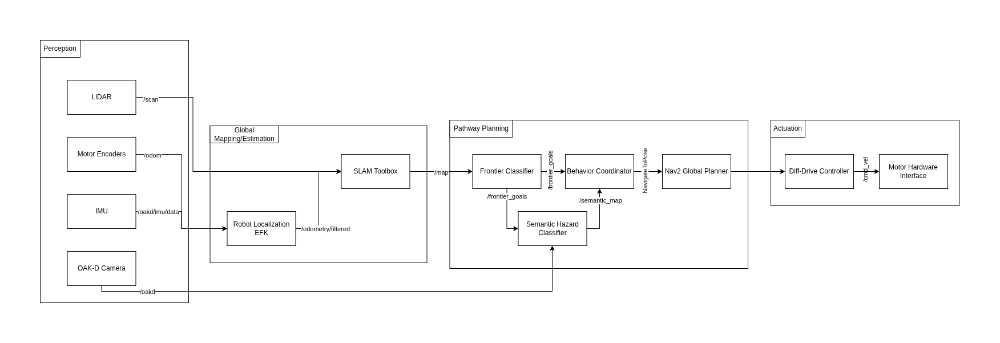

Mission Statement & Scope
Our robot is designed to autonomously explore a completely unknown indoor environment — such as a lab corridor or multi-room office space — without any prior map, human guidance, or pre-programmed paths. As it explores, it builds a live occupancy map and semantically classifies regions of the environment as clear, cluttered, or hazardous using its onboard RGB-D camera.
The problem being solved: Standard mobile robot deployments require a pre-built map before autonomous navigation is possible. This creates a chicken-and-egg problem in unknown or dynamically changed environments. Our system solves this by combining frontier-based exploration with semantic awareness, enabling the robot to build, classify, and navigate its environment simultaneously from scratch.
Target Environment: Static indoor environment — lab corridors, office rooms, and interconnected hallways. The environment contains furniture, walls, doorways, and open floor space. All obstacles are assumed static during a single exploration run.
Success State: The robot successfully explores at least 80% of the reachable floor area within a bounded environment, terminates exploration gracefully when no new frontiers exist, and produces a final labeled occupancy grid map distinguishing clear, cluttered, and hazardous zones — all without any human intervention after launch.
Technical Specifications
Robot Platform: TurtleBot4 Lite — iRobot Create3 base with Raspberry Pi 4 (2GB) compute board
Kinematic Model: Differential Drive — two independently driven wheels with a passive caster. The robot turns by varying the relative speed of the left and right wheels.
ω = (v_r - v_l) / L (angular velocity, L = wheelbase)
Perception Stack
| Sensor | Model | ROS2 Topic | Purpose |
|---|---|---|---|
| 2D LiDAR | RPLIDAR A1M8 | /scan | SLAM map building, obstacle detection |
| RGB-D Camera | Luxonis OAK-D | /oakd/rgb/preview/image_raw | Semantic region classification |
| Stereo Depth | OAK-D stereo pair | /oakd/stereo/image_raw | Depth-based hazard detection |
| IMU (Create3) | Built-in ICM-42670 | /imu | Orientation, EKF fusion |
| IMU (OAK-D) | Built-in IMU | /oakd/imu/data | Secondary orientation source |
| Wheel Encoders | Create3 built-in | /odom | Primary distance measurement |
High-Level System Architecture
The system follows the Perception → Estimation → Planning → Actuation pipeline. A reactive bypass allows the behavior coordinator to receive direct semantic feedback from the perception layer, enabling hazard-aware goal selection independently of map update speed.

Module Declaration Table
| Module / Node | Domain | Type | Description |
|---|---|---|---|
rplidar_ros2 | Perception | Library | Publishes raw 2D scan data |
depthai_ros | Perception | Library | Publishes RGB and stereo depth streams |
| SLAM Toolbox | Estimation | Library | Builds 2D occupancy grid map |
| Robot Localization EKF | Estimation | Library | Fuses wheel odometry and IMU data |
| Frontier Explorer Node | Planning | Custom | Detects frontier cells and scores by information gain |
| Semantic Hazard Classifier | Planning | Custom | Classifies camera regions as clear, cluttered, or hazardous |
| Behavior Coordinator | Planning | Custom | State machine managing exploration decisions |
| Nav2 Global Planner | Planning | Library | Calculates collision-free path to navigation goal |
| Diff-Drive Controller | Actuation | Library | Translates velocity commands to wheel speeds |
Module Intent
Library Modules
SLAM Toolbox
We will use slam_toolbox in asynchronous mode (async_slam_toolbox_node) to generate a live 2D occupancy grid from the RPLIDAR scan data. Key configuration parameters: resolution (0.05m per cell), minimum_travel_distance and minimum_travel_heading (controlling map update frequency), and scan_buffer_maximum_scan_queue_size. SLAM Toolbox was chosen over RTAB-Map for its lower CPU overhead — critical given the Raspberry Pi 4's 2GB RAM constraints.
Robot Localization EKF
We will use the robot_localization package to implement an Extended Kalman Filter that fuses wheel encoder odometry (/odom at 20Hz) with the Create3's built-in IMU (/imu at 100Hz) and the OAK-D's secondary IMU (/oakd/imu/data). The EKF runs in 2D mode (estimating x, y, yaw only). The output /odometry/filtered topic provides SLAM Toolbox with a stable odom → base_link transform.
Nav2 Global Planner
Nav2 handles local path planning and obstacle avoidance once the Behavior Coordinator selects a frontier goal. We will tune inflation_radius (0.3m — one robot diameter) and configure the DWBLocalPlanner with max_vel_x: 0.2 m/s appropriate for indoor exploration. Nav2 integrates directly with the occupancy grid output from SLAM Toolbox and provides robust recovery behaviors when the robot gets stuck.
Diff-Drive Controller
The Create3 base directly consumes geometry_msgs/Twist messages on /cmd_vel, making the hardware interface transparent to ROS2. No custom firmware is required. Velocity and acceleration limits are configured through Nav2's controller parameters (max_vel_x: 0.22, max_vel_theta: 1.0, acc_lim_x: 0.5).
Custom Modules
Frontier Explorer Node
This node implements a frontier-based exploration algorithm from scratch, based on the foundational work of Yamauchi (1997) extended with information-theoretic goal scoring. The node subscribes to /map (the live nav_msgs/OccupancyGrid) and identifies frontier cells — free cells (value 0) adjacent to at least one unknown cell (value -1). It uses connected-component labeling via scipy.ndimage to cluster frontier cells into contiguous regions.
Each frontier region is scored using an information-gain function:
The node publishes a ranked geometry_msgs/PoseArray to /frontier_goals and a visualization_msgs/MarkerArray to /frontier_markers for live RViz2 inspection.
Semantic Hazard Classifier
This node processes the OAK-D camera feed to classify regions into three semantic categories: CLEAR (open passable space), CLUTTERED (moderate obstacle density), and HAZARD (dense obstacles, transparent surfaces, or potential drop-offs). Each frame is divided into a spatial grid of patches. For each patch: edge density via Canny detection on the RGB image, mean depth and depth variance from the stereo image, and the ratio of NaN depth values. These features feed a rule-based classifier tuned on labeled lab images. Output is published as a coarse nav_msgs/OccupancyGrid to /semantic_map.
Behavior Coordinator
This node implements the state machine governing all exploration decisions. It defines five states: IDLE → SELECTING → NAVIGATING → ARRIVED → DONE. It subscribes to /frontier_goals, /semantic_map, and /battery_state, and uses the Nav2 NavigateToPose action client to dispatch goals. The coordinator filters frontier candidates against the current semantic map — skipping any frontier overlapping a HAZARD zone — and maintains a visited-frontiers set to prevent re-exploring.
Safety & Operational Protocol
Deadman Switch: If no /frontier_goals update is received for more than 5 seconds, the coordinator publishes zero-velocity to /cmd_vel and transitions to IDLE.
/battery_state.percentage drops below 15%, cancel all goals, publish zero velocity, transition to DONE./hazard_detection. On any BUMP or CLIFF event: immediate zero velocity and cancel active navigation goal.true to /exploration/stop (std_msgs/Bool) immediately stops all motion and shuts down the exploration stack.Physical Safety Protocol: During all real-robot tests, one team member must remain physically present within arm's reach of the Create3's power button. Maximum configured velocity is 0.2 m/s for all indoor exploration runs.
Git Infrastructure
Team Repository: github.com/PriColon/mobile-robotics-frontier-exploration ↗
All three teammates added as members with write access. Each team member's personal project site includes the shared repository as a Git submodule at _projects/tb4-frontier-exploration.
person-a/slam ← Princess: perception + EKF configuration
person-b/nodes ← Rohit: frontier explorer + semantic classifier
person-c/coord ← Manjunath: behavior coordinator + launch files